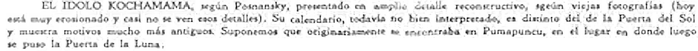
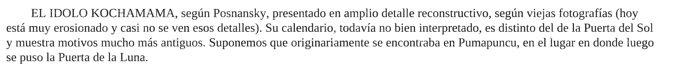

la propuesta
de la máquina
Antes de hacerlo a mano, el taller se simuló con código. Es una hipótesis para confrontarla con la mano.
El pie está en una foto de la lámina. Enderezado línea por línea, se lee y se mide: la altura de x mide 11,7 píxeles y la tinta se corrió. Pero no se calca: los ojos de la a y de la e se cierran.
Por eso la máquina partió de una letra de imprenta parecida, la imprimió con tipos de plomo simulados, la fotocopió tres veces y la amplió. De la foto tomó una sola medida: la altura de x, más baja que la de la letra sustituta.
De cada signo eligió la aparición mejor conservada y la limpió; lo que tuvo que decidir del borde fue de 0,4 a 10,9 %. La forma la dio la gramática. Después calcó cada cuerpo, con temblor, sobre el frotado de la pared.
Ninguna de estas formas entra en la caja.
- semilla
- 20260822, el día de la obra
- formas
- Liberation Serif, con plomo simulado
- altura de x
- la de la foto del pie
- calco
- el cuerpo de la gramática, en vectores



No se salvó la piedra,
solo la opinión sobre ella.del poema